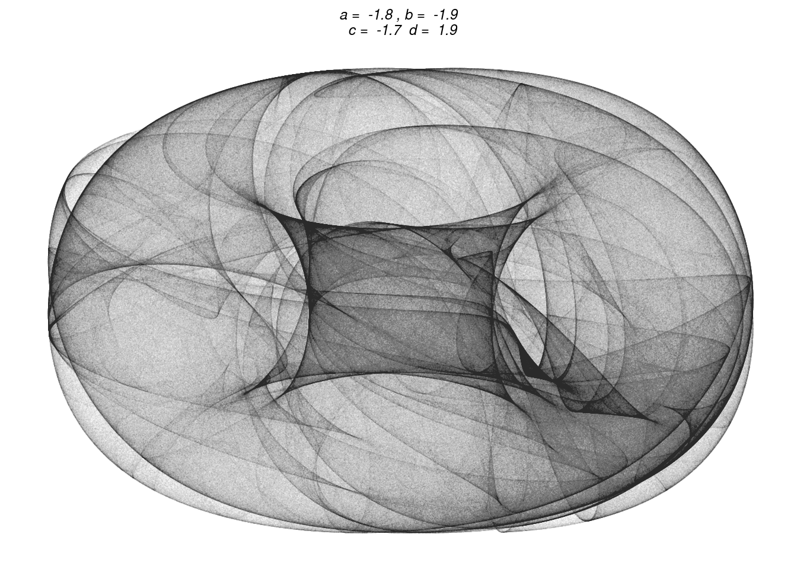
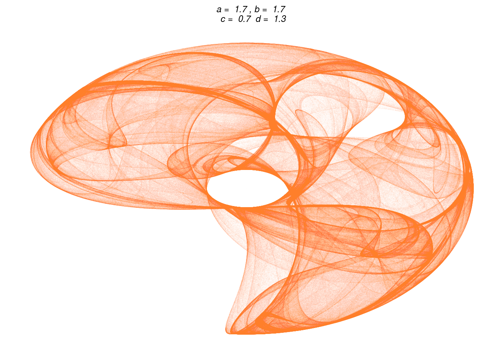
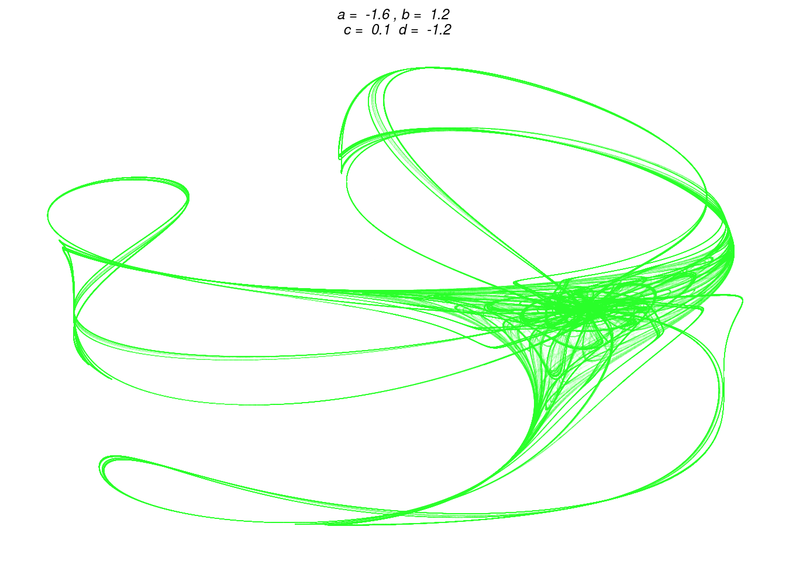

I have a strange affinity for attractors, and has had it since graduating highschool, where I got a top grade in the final mathematics examination. That was under the old grading system. And the grade (13) was given to only two students in my high school that year. The examination centered on strange attractors. I’ve have not spend much time on it lateer. But there is a weird beauty in them.
Recently I discovered Clifford Attractors. Take a look at this page for some very nice examples. They look stunning, and are simple to handle. Lets play with them!
Clifford Attractors are defined by iteratively making these calculations: xn+1 <- sin(ayn) + ccos(axn) yn+1 <- sin(bxn) + dcos(b*yn)
Choose a, b, c and d between -2 and 2. Calculate x,y for n=0 to n=10.000.000 and plot them. It looks cool!
Lets begin by defining a function that takes four variables and a number of points, and calculate the points:
calcTrace <- function(a,b,c,d,numint){
x <- y <- rep(NULL, numint) # initializing the vectors
x[1] <- 0 # set the first point to (0,0)
y[1] <- 0
for (i in 2:numint){ # calculate the following points
x[i] <- sin(a*y[(i-1)]) + c*cos(a*x[(i-1)])
y[i] <- sin(b*x[(i-1)]) + d*cos(b*y[(i-1)])
}
df <- data.frame(x=x,y=y)
return(df)
}Lets also define some parameters. I would prefer to choose the parameters at random. But there are a surprising number of instances where this lead to nothing. The formulas converges very quickly on just a few values, and I end up with a simple dot on the plot. I guess that is to be expected - but not what I am looking for. I want beautiful images!
a <- -1.8
b <- -1.9
c <- -1.7
d <- 1.9
points <- calcTrace(a,b,c,d,10000000)That takes some time - I’ll get back to that. Lets plot it. I remove almost anything from the ggplot theme, and insert the parameters in the plot.
library(ggplot2)
opt = theme(legend.position = "none",
panel.background = element_rect(fill="white"),
axis.ticks = element_blank(),
panel.grid = element_blank(),
axis.title = element_blank(),
axis.text = element_blank(),
plot.title = element_text(size=9, face="italic", hjust = 0.5)
)
p <- ggplot(points, aes(x, y)) + geom_point(color="black", shape=46, alpha=.01) +
opt +
ggtitle(paste("a = ",a , ", b = ", b, "\n c = ", c, " d = ", d))
print(p)
All right. It takes some time to do the calculations. There are ways to speed that up.
One way is to compile the function.
library(compiler)
compiled <- cmpfun(calcTrace)According to the compiler packages, that should make the function faster. Lets test it:
library(microbenchmark)
test <- microbenchmark(
calcTrace(a,b,c,d,10000000),
compiled(a,b,c,d,10000000) , times=3
)
print(test)I am not impressed. This result might be caused by the fact that I am running Paperclips http://www.decisionproblem.com/paperclips in the background (almost ready to release the hypnodrones!) on a not particularly powerfull laptop.
What else could be done? I’m tinkering with this to hone my R-skills. But here might be a situation where it would be better to do it in another language.
The library Rcpp allows me to add C++ code. Lets try that:
library(Rcpp)
cppFunction('DataFrame cppTrace(double a, double b, double c, double d, int numint) {
// create the columns
NumericVector x(numint);
NumericVector y(numint);
x[0]=0;
y[0]=0;
for(int i = 1; i < numint; ++i) {
x[i] = sin(a*y[i-1])+c*cos(a*x[i-1]);
y[i] = sin(b*x[i-1])+d*cos(b*y[i-1]);
}
// return a new data frame
return DataFrame::create(_["x"]= x, _["y"]= y);
}
')Lets see how quick that version is:
library(microbenchmark)## Loading required package: microbenchmarkCoretest2 <- microbenchmark(
cppTrace(a,b,c,d,10000000),
times=3
)
print(test2)## Unit: seconds
## expr min lq mean median uq
## cppTrace(a, b, c, d, 1e+07) 2.11005 2.122835 2.154553 2.135619 2.176804
## max neval
## 2.217989 3That was fast!
The plot still takes an awfull lot of time. I have not found a way to do anything about that.
Lets make a new plot, with different parameters.
a <- 1.7
b <- 1.7
c <- 0.7
d <- 1.3
points <- cppTrace(a,b,c,d,10000000)
q <- ggplot(points, aes(x, y)) + geom_point(color="orange", shape=46, alpha=.01) +
opt +
ggtitle(paste("a = ",a , ", b = ", b, "\n c = ", c, " d = ", d))
print(q)
Nice. Lets make one in green as well:
a <- -1.6
b <- 1.2
c <- 0.1
d <- -1.2
points <- cppTrace(a,b,c,d,10000000)
r <- ggplot(points, aes(x, y)) + geom_point(color="green", shape=46, alpha=.01) +
opt +
ggtitle(paste("a = ",a , ", b = ", b, "\n c = ", c, " d = ", d))
print(r)